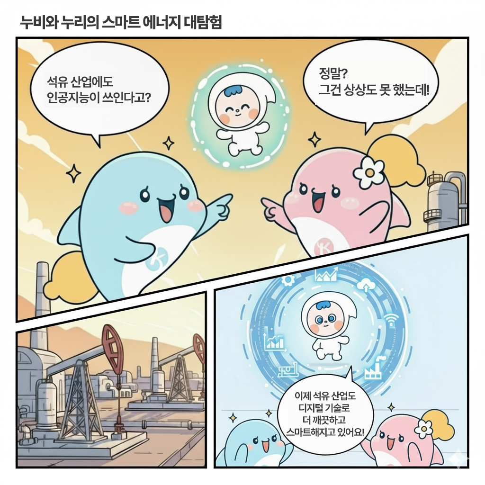
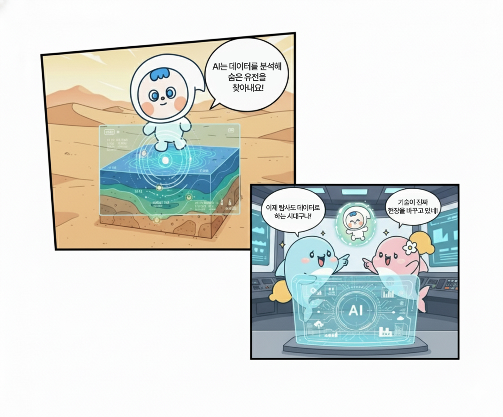
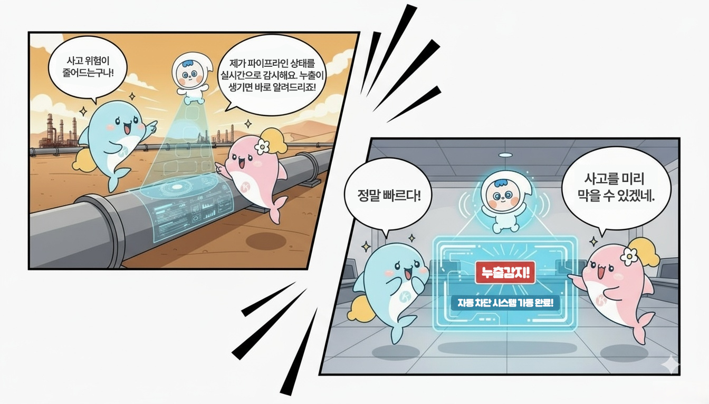
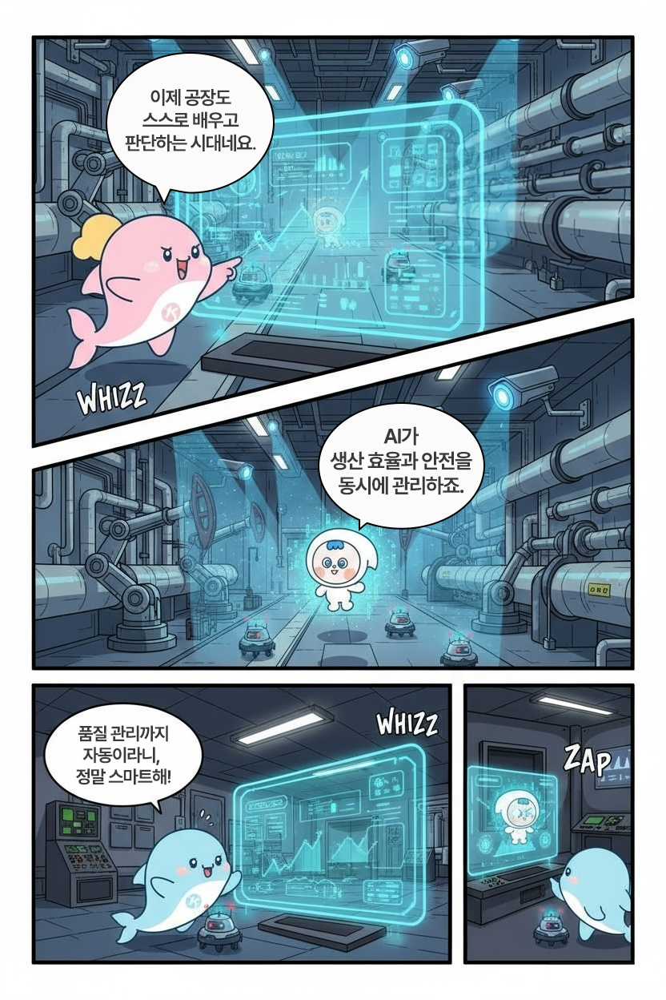
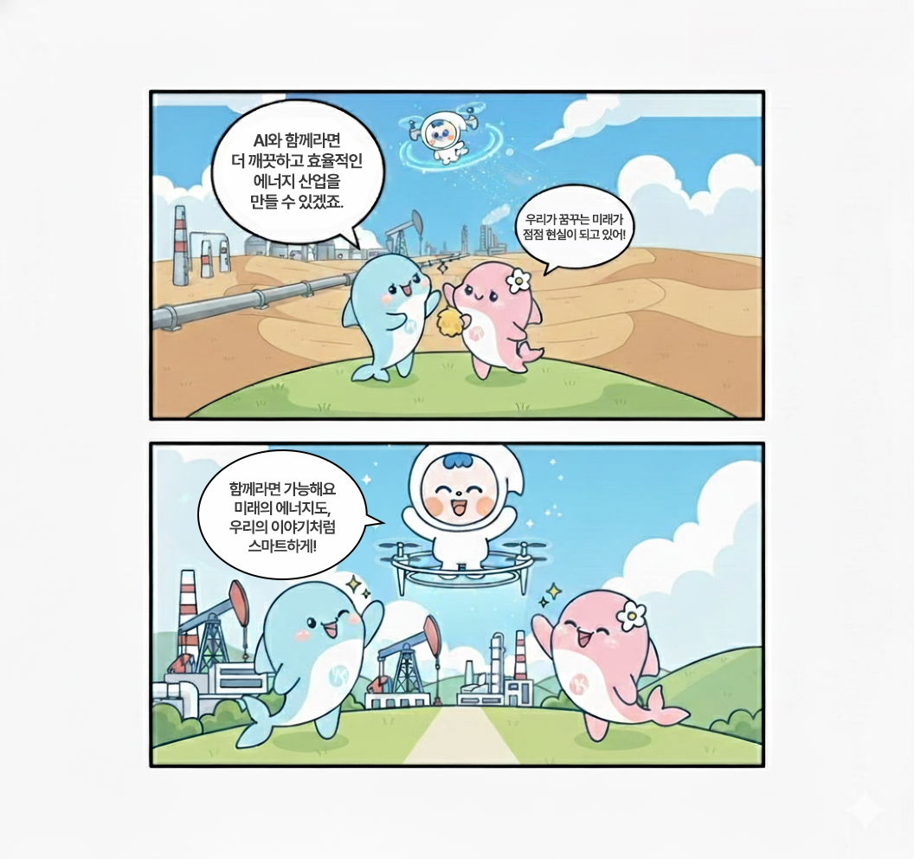

이번 AI+KNOC에서는 한국석유공사의 캐릭터 누비, 누리 그리고 기름이가 주인공이 되어 AI와 함께 석유 산업의 디지털 혁신을 살펴보는 만화를 만들어봅니다. 굴뚝 산업의 상징이던 석유 산업이 AI, 빅데이터, IoT를 만나 어떻게 스마트하게 변신하고 있는지, 그 변화의 과정을 하나의 이야기로, 한 컷의 장면으로 풀어내는 만화를 제작해보겠습니다. AI와 사람이 함께 그려나가는 만화는 ‘에너지와 기술의 만남’을 어떻게 직관적이고 흥미롭게 보여줄 수 있을까요?
이번 AI+KNOC는 ChatGPT, Gemini, Genspark와 함께했습니다.
이번 만화의 출발점은 한국석유공사 인스타그램 게시물 <에너지와
기술의 만남: 석유 산업의 디지털 혁신>입니다. 석유 산업에 부는
디지털 혁신 바람을 한눈에 정리하고 있는 이 콘텐츠를 AI와 함께
분석하면서 만화 구성 방향을 논의하기 시작했습니다. 기존 콘텐츠의
내용을 유지하되,
시각적으로 체험할 수 있는 만화적 언어로 재구성
해보기로 한 것이죠.
AI는 기존 게시물의 흐름을 ‘배경-탐사-운송-정제-미래’로
정리했습니다. 각 장면에서 누비와 누리, 그리고 기름이가 등장해 기술
변화를 설명하는 구성으로 방향을 잡으며 구체적인 그림을
그려나갔습니다. 누비와 누리는 ‘현장 탐험가’로, 기름이는 이 여정을
안내하는 ‘AI 파트너’로 역할을 설정했습니다. 세 캐릭터들이 함께
이동하며 변화를 목격하고 그 속에서 기술이 어떻게 에너지 산업을
새롭게 바꾸고 있는지를 독자에게 설명하는 것이죠.
다음은 장면을 구체적인 컷 구성과 대사 흐름으로 옮기는 단계입니다. 각 장면이 단순히 정보를 전달하는 데 그치지 않고, 캐릭터들의 감정과 리액션이 살아있는 이야기로 전개되도록 AI에게 장면 구성을 요청했습니다. AI는 원본 게시물의 설명 문장을 분석해, 이를 캐릭터 중심의 서사 구조로 바꿔주었습니다. 예를 들어, ‘AI 기반 탐사’라는 문장은 ‘기름이가 지질 데이터를 분석하며 숨은 유전을 찾아내는 장면’으로, ‘스마트 파이프라인’은 기름이가 드론으로 송유관을 점검하며 누비와 누리에게 실시간 데이터를 보여주는 장면’으로 재해석되었습니다.
AI가 제안한 구성에 따라 장면은 다음과 같은 흐름으로 이어집니다.
-
배경
“석유 산업에도 인공지능이?”라는 누비의 호기심에서 이야기가 시작됩니다.
기름이는 AI, 빅데이터, IoT 기술이 석유 산업의 효율성과 안전성을 바꾸고 있다고 설명합니다.
기술 혁신이 산업 전반의 패러다임을 전환시키는 배경을 간결하게 제시하는 도입부입니다. -
탐사-Upstream
사막 위를 나는 기름이의 드론 카메라에 지질 데이터가 겹쳐집니다.
“AI는 데이터를 분석해 숨은 유전을 찾아내요!”
누리와 누비는 감탄하며 “이제 탐사도 데이터로 하는 시대구나!”라고 말합니다.
AI 기반 탐사와 스마트 유전 기술을 시각적으로 표현한 장면입니다. -
운송-Midstream
송유관 위를 따라 날아가는 기름이가 말합니다.
“제가 파이프라인 상태를 실시간으로 감시해요. 누출이 생기면 바로 알려드리죠!”
누비는 “사고 위험이 줄어드는구나!” 하며 안도합니다.
운송과 안전관리의 스마트화를 경쾌하게 보여줍니다. -
정제-Downstream
정유공장 내부, 로봇이 순찰하고 AI CCTV가 위험을 감지합니다.
누리가 말합니다. “이제 공장도 스스로 배우고 판단하는 시대네요.”
AI가 생산 효율과 안전을 동시에 높이는 모습을 통해 산업의 진화가 그려집니다. -
미래
하늘을 나는 드론 기름이와, 이를 올려다보는 누비와 누리.
“AI와 함께라면 더 깨끗하고 효율적인 에너지 산업을 만들 수 있겠죠.”
누비의 말에 기름이가 미소를 지으며 대답합니다.
“함께라면 가능해요. 미래의 에너지도, 우리의 이야기처럼 스마트하게!”
기술과 사람이 함께 만들어가는 미래를 상징적으로 마무리하는 장면입니다.
AI가 정리한 다섯 개의 장면을 토대로 구체적인 시나리오 작업이 시작되었습니다. 캐릭터의 대사, 구체적인 장면을 하나씩 설정하는 과정은 마치 ‘글로 된 만화’를 완성해나가는 것 같았습니다. AI는 각 장면을 두 컷으로 구성해 총 다섯 페이지 분량의 만화를 제안했습니다. 예를 들어 ‘탐사’ 장면에서는 사막 위를 나는 드론 기름이의 카메라 화면에 지질 데이터가 겹쳐지고, 누비와 누리가 “이제 탐사도 데이터로 하는 시대구나!”라며 놀라는 모습이고, ‘정제’ 장면에서는 로봇이 순찰하는 스마트 플랜트 안에서 AI가 만들어내는 산업의 변화를 자연스럽게 보여주는 방식이죠.
1. 산업의 변화가 시작되다
컷1
산업단지 위로 해가 떠오르고, 누비와 누리가 하늘을 나는 AI
드론 ‘기름이’를 발견한다.
- “석유 산업에도 인공지능이 쓰인다고?”
- “정말? 그건 상상도 못 했는데!”
컷2
기름이 주변에 데이터 스트림과 그래프, IoT 아이콘이
떠오른다.
- “이제 석유 산업도 디지털 기술로 더 깨끗하고 스마트해지고 있어요!”
2. Upstream: 유전을 찾는 인공지능
컷3
사막 위를 나는 드론 기름이. 카메라 화면에 지질 데이터가
겹쳐진다.
- “AI는 데이터를 분석해 숨은 유전을 찾아내요!”
컷4
모니터 앞의 누비와 누리가 감탄한다.
- “이제 탐사도 데이터로 하는 시대구나!”
- “기술이 진짜 현장을 바꾸고 있네!”
3. Midstream: 송유관을 지키는 드론
컷5
송유관 위를 따라 드론 기름이가 날며 파이프라인을 스캔한다.
- “제가 파이프라인 상태를 실시간으로 감시해요. 누출이 생기면 바로 알려드리죠!”
- “사고 위험이 줄어드는구나!”
컷6
모니터 앞의 누비와 누리가 감탄한다.
- “누출 감지! 자동 차단 시스템 가동 완료!”
- “정말 빠르다!”
- “사고를 미리 막을 수 있겠네.”
4. Downstream: 스마트 플랜트의 시대
컷7
정유공장 내부, 로봇이 순찰하고 AI CCTV가 위험을 감지한다.
- “이제 공장도 스스로 배우고 판단하는 시대네요.”
- “AI가 생산 효율과 안전을 동시에 관리하죠.”
컷8
모니터 속 그래프가 자동으로 조정되고, 기름이의 눈이
반짝인다.
- “품질 관리까지 자동이라니, 정말 스마트해!”
5. 기술과 사람이 함께 만드는 내일
컷9
하늘을 나는 드론 기름이, 아래에서 이를 올려다보는 누비와
누리.
- “AI와 함께라면 더 깨끗하고 효율적인 에너지 산업을 만들 수 있겠죠.”
- “우리가 꿈꾸는 미래가 점점 현실이 되고 있어!”
컷10
밝은 하늘 아래 세 캐릭터가 함께 손을 흔든다.
- “함께라면 가능해요. 미래의 에너지도, 우리의 이야기처럼 스마트하게!”
이처럼 시나리오 작업은 만화의 골격을 세우는 핵심 단계입니다. AI와의 협업을 통해 설명 중심이던 정보를 대사와 리액션, 시각적 장면으로 바꾸어가며, ‘스마트 에너지 산업 이야기’를 공감할 수 있는 이야기로 풀어내는 과정이었습니다.
어느덧 마지막 단계입니다. 시나리오를 토대로 만화 제작을 요청했더니
AI는 컷마다 배경과 캐릭터 표정, 구도 등을 높은 정확도로
구현해냈습니다. 특히 사막 위의 탐사 장면이나 공장의 내부 공간처럼
복잡한 배경을 자연스럽게 그려내며, 석유 산업의 디지털 전환이라는
다소 기술적인 주제를 시각적으로 친숙하게 풀어냈습니다. 한 장 한 장
만들어낸 이미지를 만화적 프레임으로 재구성해 실제 만화처럼
완성해내는 능력도 흥미로웠습니다.
동시에 한계도 느껴졌습니다. AI가 그린 말풍선 속 대사는 자주 오류를
냈습니다. 글자가 뒤섞이거나, 대사 내용이 일부 누락되기도 했습니다.
이미지로서의 만화는 잘 구현했지만, 그 안의 텍스트를 시각적으로
정확히 실현하는 능력은 아직 미숙한 단계였던 것이죠. 결국 대사는
사람의 손을 거쳐야 했습니다. 완성된 이미지를 바탕으로 직접 대사를
새로 입력하며 만화를 완성할 수 있었습니다.
이렇게 탄생한 AI 협업 만화, <누비와 누리의 스마트 에너지
대탐험>을 소개합니다.





이번 AI 만화 제작기, 여러분은 어떻게 보셨나요? 한 장의 이미지가
만들어지기까지의 과정 속에는 생각보다 많은 대화와 시도가
있었습니다. 주제를 함께 분석하고, 장면을 구상하고, 시나리오를
구성하고, 마지막으로 그림을 완성하기까지, AI와 사람이 나란히 걸은
여정이었죠.
여러분은 이 과정 중 어떤 부분이 가장 흥미로웠나요? AI가 만든
이미지를 보며 놀라고, 그 안에서 새로운 표현의 가능성을 발견하는
일. 그 자체가 이미 또 다른 창작의 시작이 아닐까요? 여러분에게도 이
작은 실험이, AI와 함께하는 새로운 가능성을 다시 생각해보는 계기가
되길 바랍니다.